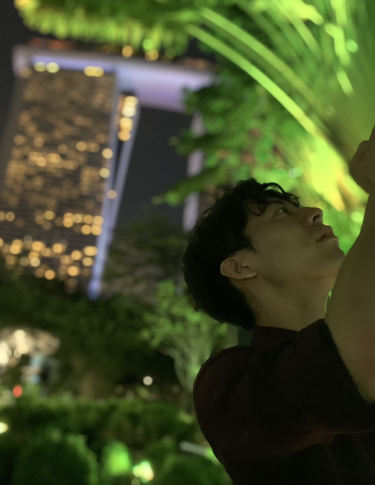

- 
Welcome to my space
About Me
I'm Kohei YAMAMOTO (山本 晃平), Japanese lived in Japan and Singapore thus far. I originally touched the sense of computer science with CPU architecture in Bachelor's study. In parallel of this initial curiosity, I started to delve into the two different research domains: wireless localisation and human-computer interaction (social science in computer science) at the age of 21 while collborating with one of the Internet pioneers.
After the conferment of B.Eng., I took 1.5 years off and dived into industrial practices at some IT companies: a research institution, cloud vendor and C2C sector, and accordingly, engaged myself in their data-scientific projects.
As to Master's study after the gap year, I determined to enjoy myself with four-dimensions (spatiotemporal) data analytics and solidified my curiosity about locational big data and computational social science.
Timeline
M.Sc. Appl Geo Info Sys
↑
Gap Year (1.5Y)
@ IBM Research @ Microsoft @ GumGum @ Mercari
↑
Collab. Researcher (1.5Y)
@ Yahoo Japan Research
↑
B.Eng. Computer Science
Hashtag
Four-Dimensions (Spatiotemporal) Data Analytics, Locational Big Data, Computational Social Science, Location Science, Localisation, Machine Learning, Human Computer Interaction, Accessibility

Skills
-
Four-Dimensions (Spatiotemporal) Data Analytics
Locational Big Data
Computational Social Science -
Machine Learning
Human Computer Interaction -
Public Speaking, PPT Visualisation
-
Japanese Native
-
English Fluent
-
Python (5 years)
-
C, Java, Scala, Assembly, ObjC, Swift
Research Experience (superscripts correspond to publications below)
M.Sc. Appl Geo Info Sys @ National University of Singapore*4, 2019-20
- Four-Dimensions (Spatiotemporal) Data Analytics, Locational Big Data, Computational Social Science
Student Researcher @ IBM Research*3, 2018
- Localisation, Human Computer Interaction, Accessibility
Collaborative Researcher @ Yahoo Japan Research*2, 2017-18
- Localisation, Locational Big Data, Machine Learning
B.Eng. Computer Science @ Ritsumeikan University*1, 2014-18
- Human Computer Interaction, Machine Learning, CPU Architecture

Publications
Peer-Reviewed Articles
- *4 Yamamoto, K., Zhou, G. and Feng, C., 2020. Research Related to Extraction of Human Dynamics and Patterns Analysing WiFi Signatures. (Writing in progress)
- *4 Tran, P., Zhao, M., Yamamoto, K., Minet, L., Nguyen, T. and Balasubramanian, R., 2020. Improvement of sustainable cycling index with the integrated evaluation of cyclists’ personal exposure to airborne particles. (Under peer-review)
- Author Contributions: Implementation of deep convolutional model of semantic segmentation.
- *2 Tsubouchi, K., Yamamoto, K. and Nishio, N., 2019. No-Sweat Detective: No Effort Anomaly Detection for Wi-Fi-Based Localisation. In Proceedings of the 2019 IEEE International Conference on Indoor Positioning and Indoor Navigation, 30 September-3 October 2019 Pisa, Italy. 1-8.
- Award: Nomination to Best Paper.
- Author Contributions: Field data collection (one year), Cogitation and Implementation of the methodology, Evaluation and Formal Analysis (Yet, taken over to the first author to prioritise my family/relative matter).
- *1 Yamamoto, K., Kan, F., Murao, K., Mochizuki, M. and Nishio, N., 2019. Manual Grading Task Support System with Interactive Correction Mechanism. The Transactions of Human Interface Society, 21 (1), 73- 84.
- *3 Yamamoto, K., Murata, M. and Sato, D., 2018. Localisation Method Considering Characteristic Movements of Visually Impaired Persons (in Japanese). In Proceedings of the 2018 IPSJ SIG AAC Conference on Assistive and Accessible Computing, 24-25 August 2018 Tokyo, Japan. 10, 1-7.
- Award: IPSJ Yamashita SIG Annual Research Award, 2020 (Peer/Committee-Reviewed).
- Award: Honourable Mention Award, 2018.
- *1 Yamamoto, K., Kan, F., Murao, K., Mochizuki, M. and Nishio, N., 2018. GERMIC: Application of Gesture Recognition Model with Interactive Correction to Manual Grading Tasks. In Proceedings of the 2018 EAI International Conference on Mobile Computing, Applications and Services. Lecture Notes of the Institute for Computer Sciences, Social Informatics and Telecommunications Engineering, 28 February-2 March 2018 Osaka, Japan. 240.
- *2 Kawanaka, K., Yamamoto, K., Tsubouchi, K., Murao, K., Mochizuki, M. and Nishio, N., 2017. Detecting Aged Deterioration of a Radio Base Station Map for Wi-Fi Positioning. In Proceedings of the 2017 ACM International Joint Conference on Pervasive and Ubiquitous Computing and Proceedings of the 2017 ACM International Symposium on Wearable Computers (Ubicomp'17), 11-15 September 2017 Hawaii, USA. 547-556.
- Author Contributions: Code screening, Research refining and Deeper analysis.
- *1 Kan, F., Yamamoto, K., Murao, K., Mochizuki, M. and Nishio, N., 2017. Implementation of Scoring System by Handwriting Recognition and Interactive Correction Mechanism (in Japanese). In Proceedings of the 2017 IPSJ Conference on Multimedia, Distributed, Cooperative and Mobile Symposium, 28-30 June 2017 Hokkaido, Japan. 1754-1760.
- Author Contributions: Cogitation and Implementation of the methodology, User Evaluation and Formal Analysis (Yet, Initial Conceptualisation is owed to the first author).
Thesis and Others
- *4 Yamamoto, K., 2020. Juxtaposed Analysis of Individual and Group Movements from WiFi Signatures. M.Sc. Thesis (Marked 5.0/5.0). (Research Advisors: Zhou, G. and Feng, C.)
- *1 Yamamoto, K., 2018. Anti-Aging Calibration Methodology with User Log-Oriented Anomaly Detection for Wi-Fi Fingerprinting Localisation. B.Eng. Thesis (Marked 5.0/5.0). (Research Advisor: Nishio, N.)
- Award: Best Presenter Award.
- *2 Yamamoto, K., Tsubouchi, K. and Nishio, N., 2017. Anomaly Detection Method Specialized for Aging of Wi-Fi Localisation Model (in Japanese). In Proceedings of the 2017 Kobe University Ubiquitous and Wearable Workshop, 22-23 December 2017 Hyogo, Japan. 43.
Presentations
- Yamamoto, K., 2019. No-Sweat Detective: No Effort Anomaly Detection for Wi-Fi-Based Localisation. At the 2019 IEEE International Conference on Indoor Positioning and Indoor Navigation, 30 September-3 October 2019 Pisa, Italy.
- Yamamoto, K., 2018. Localisation Method Considering Characteristic Movements of Visually Impaired Persons (in Japanese). At the 2018 IPSJ SIG AAC Conference on Assistive and Accessible Computing, 24-25 August 2018 Tokyo, Japan.
- Award: Honourable Mention Award.
- Yamamoto, K., 2018. GERMIC: Application of Gesture Recognition Model with Interactive Correction to Manual Grading Tasks. At the 2018 EAI International Conference on Mobile Computing, Applications and Services, 28 February-2 March 2018 Osaka, Japan.
- Yamamoto, K., 2018. Anti-Aging Calibration Methodology with User Log-Oriented Anomaly Detection for Wi-Fi Fingerprinting Localisation. At the B.Eng Thesis Defence, 8 February Shiga, Japan.
- Award: Best Presenter Award.
- Yamamoto, K., 2017. Anomaly Detection Method Specialized for Aging of Wi-Fi Localisation Model (in Japanese). At the 2017 Kobe University Ubiquitous and Wearable Workshop, 22-23 December 2017 Hyogo, Japan.
- Yamamoto, K., 2017. Cross-Interactivity in EdTech. At the 2018 Japan-China Conference of University Presidents as a representative, 18-22 October 2017 Dalian, China.
- Yamamoto, K., 2017. Detecting Aged Deterioration of a Radio Base Station Map for Wi-Fi Positioning. At the 2017 ACM International Joint Conference on Pervasive and Ubiquitous Computing and Proceedings of the 2017 ACM International Symposium on Wearable Computers (Ubicomp'17), 11-15 September 2017 Hawaii, USA.
- Yamamoto, K., 2017. Implementation of Scoring System by Handwriting Recognition and Interactive Correction Mechanism (in Japanese). At the 2017 IPSJ Conference on Multimedia, Distributed, Cooperative and Mobile Symposium, 28-30 June 2017 Hokkaido, Japan.
- Yamamoto, K., 2016. Acceleration of Mutual Interaction Using IT Media. As a delegation to USA from the Ministry of Foreign Affairs of Japan, 8-15 March San Jose, USA.
Awards
- IPSJ Yamashita SIG Annual Research Award (山下記念研究賞), One of the most prestigious annual research award of IPSJ, 2020
- Nomination to the Best Paper, IEEE IPIN, 2019
- Repayment Exemption from JASSO Student Loans for Excellent Achievements (特に優れた業績による返還免除), 3,100 USD, 2019
- Honorable Mention Award, research society IPSJ SIG AAC (Assistive and Accessible Computing), 2018
- Award for student creating the future, 1,000 USD, 2018
- Dean's Award for outstanding student, 100 USD, 2018
- Award for promising and prospective student, 4,500 USD, 2017
- Saionji (Founder) Memorial Award, Top award for the most outstanding student, 6,000 USD, 2017
- Saionji (Founder) Memorial Award, Top award for the most outstanding student, 7,000 USD, 2016
- Award for author of outstanding experiment paper on MIPS・TCP/IP, 500 USD, 2016
- Saionji (Founder) Memorial Award, Top award for the most outstanding student, 7,000 USD, 2015